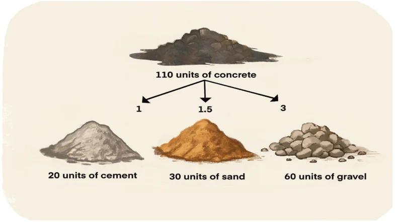
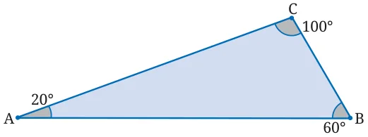

In an earlier chapter, we learnt how to divide a whole in a ratio, e.g., 12 in the ratio 2 : 1. To do this, we add the terms \((2 + 1 = 3)\), and divide the whole by this sum \((12 \div 3 = 4)\). We multiply each term by this quotient : \(2 \times 4 = 8\) and \(1 \times 4 = 4\) . So, 12 divided in the ratio 2 : 1 is 8 : 4.
We can extend this to ratios with multiple terms. Let us look at the earlier example of making a concrete mixture. We need to mix cement, sand, and gravel in the ratio of 1 : 1.5 : 3 to get the concrete. Example 3: For some construction, 110 units of concrete are needed. How many units of cement, sand, and gravel are needed if these are to be mixed in the ratio 1 : 1.5 : 3? For 1 unit of cement, we need to add 1.5 units of sand and 3 units of gravel. Together, they add up to 5.5 units of concrete. We need to do this 20 times \((110 \div 5.5 = 20)\) to get 110 units of concrete. So each term has to be multiplied by 20. \(1 \times 20 = 20\) units of cement, \(1.5 \times 20 = 30\) units of sand, and \(3 \times 20 = 60\) units of gravel.

So, we need 20 units of cement, 30 units of sand, and 60 units of gravel to make the concrete. When we divide a quantity x in the ratio a : b : c : …, the terms in the ratio are -
\(x \times\) (a \(+ b + c + a\) …) , \(x \times\) (a \(+ b + c + b\) …) , \(x \times\) (a \(+ b + c + c\) …) , and so on.
Example 4: You get a particular shade of purple paint by mixing red, blue, and white paint in the ratio 2 : 3 : 5. If you need 50 ml of purple paint, how many ml of red, blue, and white paint will you mix together?
Red paint \(= 50 \times \frac{2}{(2 + 3 + 5)} = 50 \times \frac{2}{10} = 10\) ml. Blue paint \(= 50 \times \frac{3}{(2 + 3 + 5)} = 50 \times \frac{3}{10} = 15\) ml. White paint \(= 50 \times \frac{5}{(2 + 3 + 5)} = 50 \times \frac{5}{10} = 25\) ml.

Example 5: Construct a triangle with angles in the ratio 1 : 3 : 5. We know that the sum of the angles in a triangle is \(180 ^{\circ}\) . So the angles are

\(\angle A = 180 ^{\circ} \times \frac{1}{(1 + 3 + 5)} = 180 ^{\circ} \times \frac{1}{9} = 20 ^{\circ}\) . \(\angle B = 180 ^{\circ} \times \frac{3}{(1 + 3 + 5)} = 180 ^{\circ} \times \frac{3}{9} = 60 ^{\circ}\) . \(\angle C = 180 ^{\circ} \times \frac{5}{(1 + 3 + 5)} = 180 ^{\circ} \times \frac{5}{9} = 100 ^{\circ}\) .